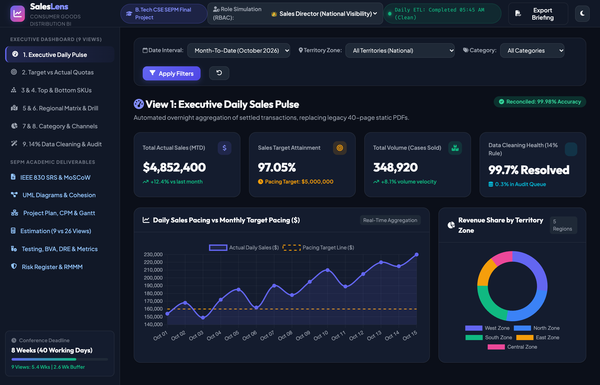
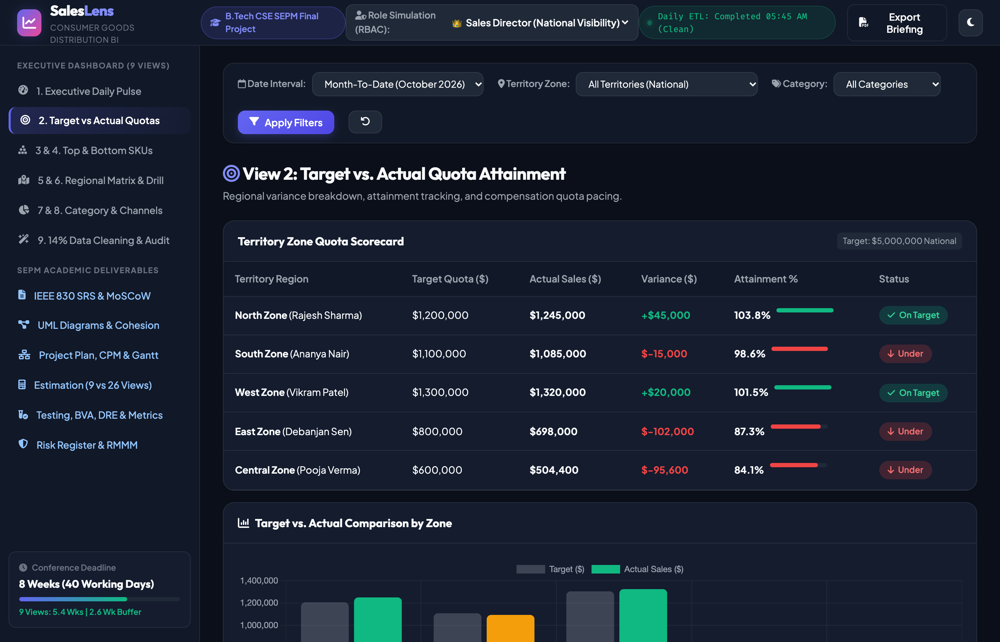
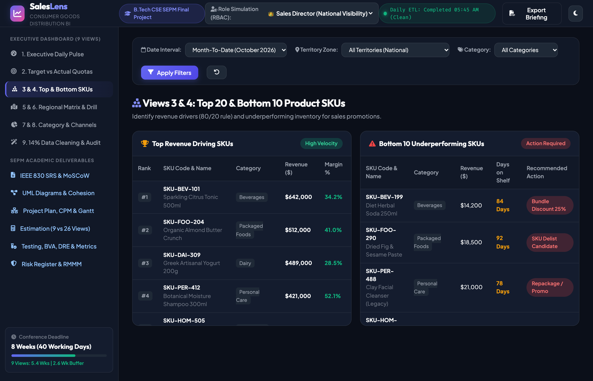
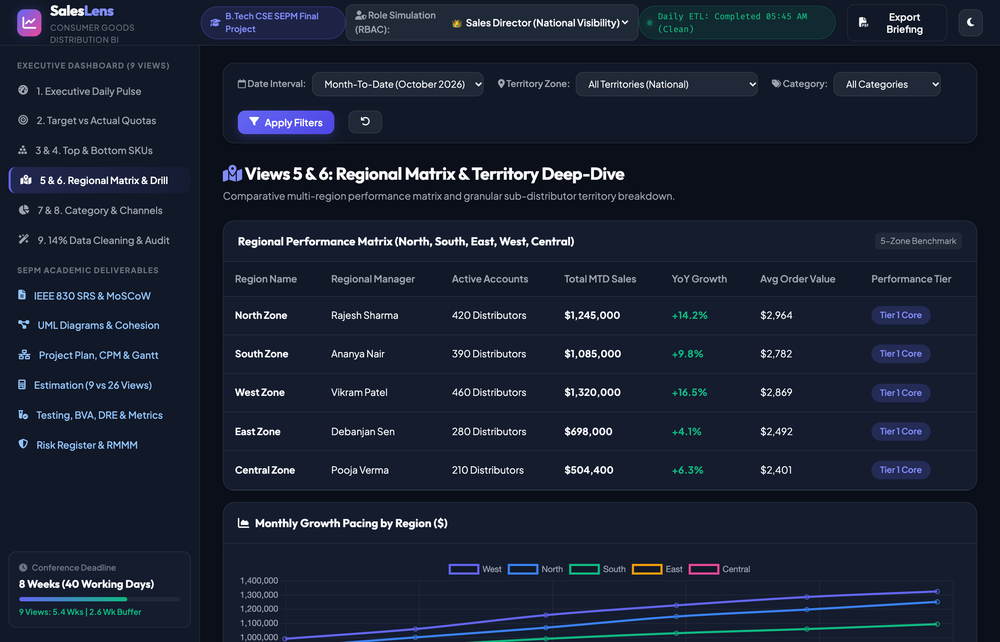
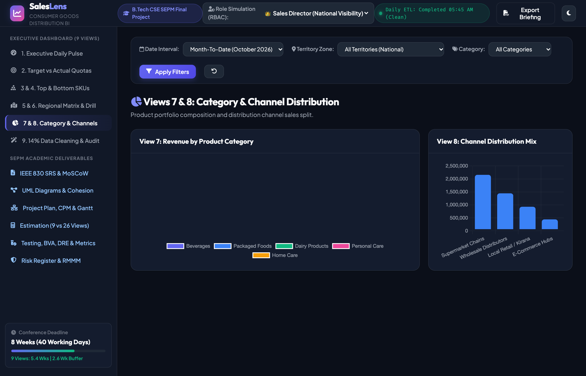
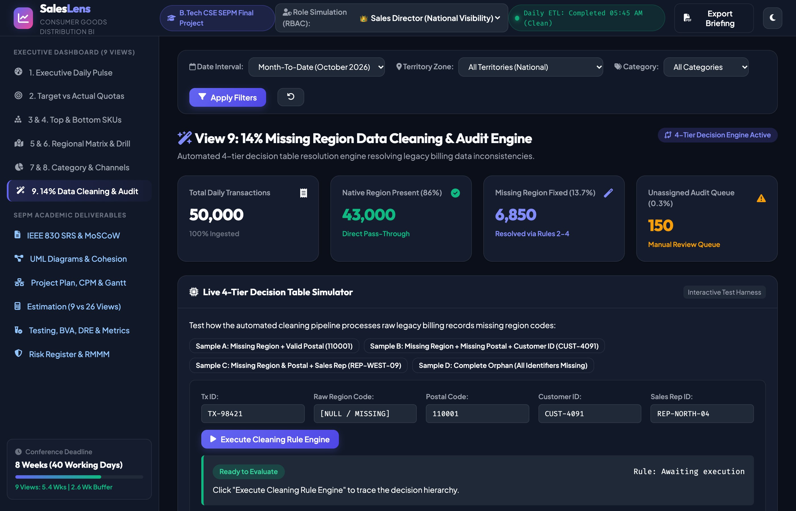
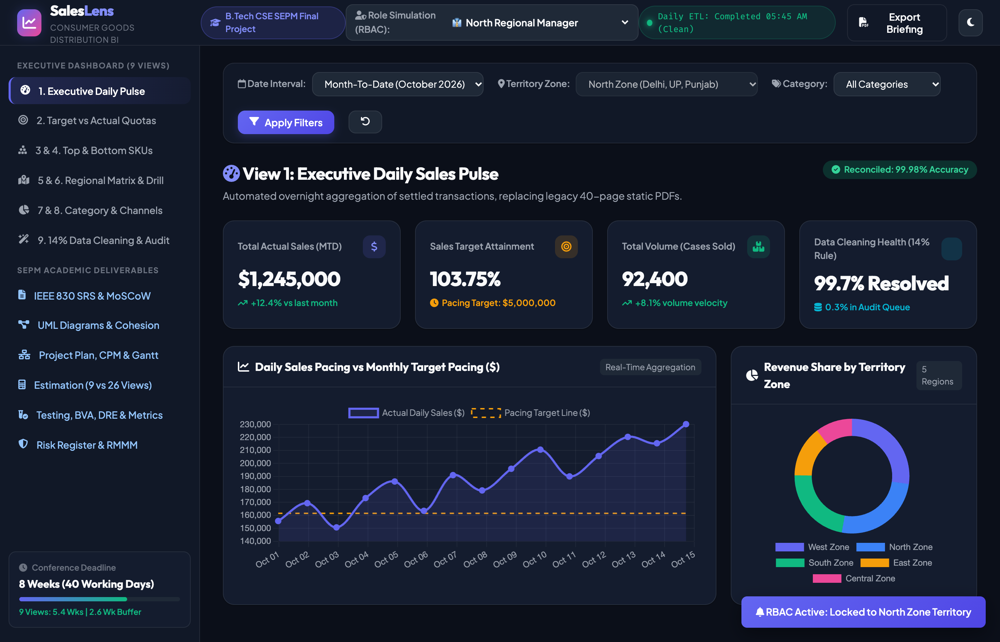
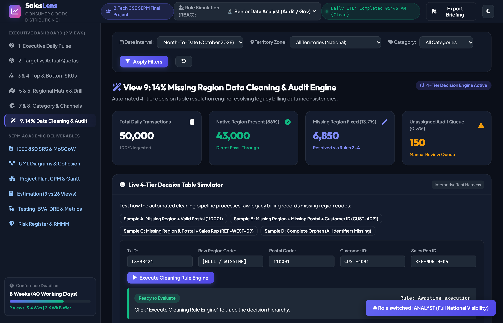
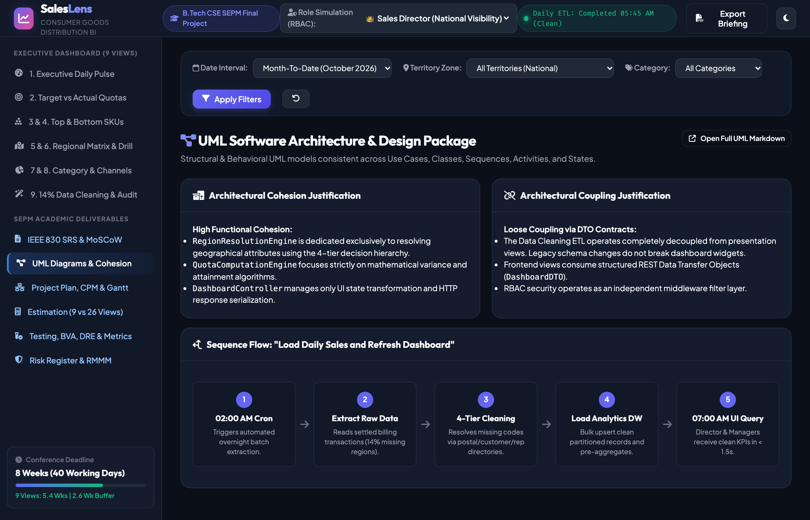
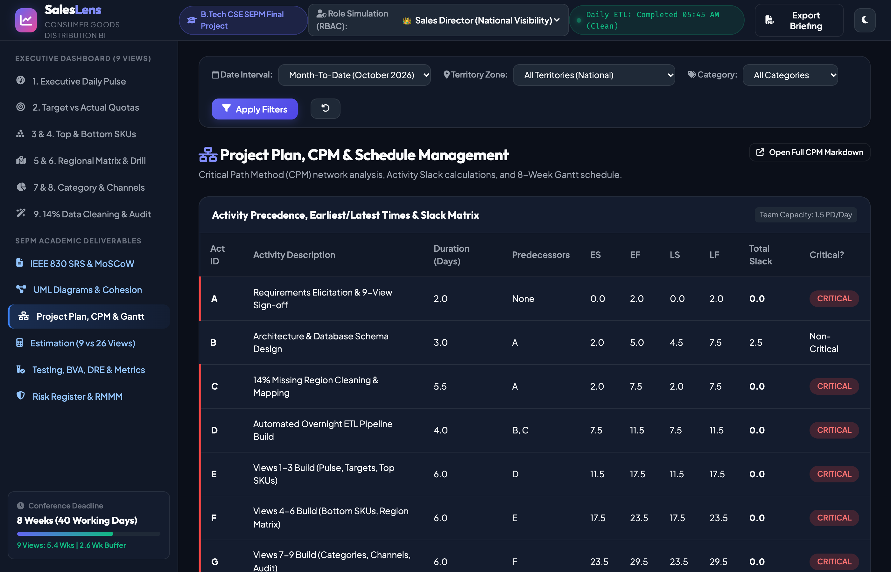

Replaces manual 40-page PDF reports with sub-2s interactive executive pulse, quota pacing, top SKUs, 5-zone matrix, and category analytics.
Automated 4-tier fallback (Postal → CustMaster → SalesRep → Quarantine) with 100% auditable transaction lineage.
Pruning 26 to 9 views saves 51 person-days. Team (1.5 FTE) finishes in 39 working days (7.8 wks) with 2 days buffer reserve.
BVA edge tests, 5-rule decision table, Defect Density = 1.36/KLOC, and strict Role-Based Access Control (RBAC).
Directly implements FR-01 (Daily Sales Aggregation) and meets NFR-03 (Query Latency ≤ 1.5s). The Sales Director reviews real-time revenue pacing ($4.85M actual vs $5.00M target), 1,760 active distributor accounts, daily velocity trends, and brand contributions.

Eliminates weekend manual consolidation. Instead of waiting for Monday morning 40-page PDFs, leadership receives instantaneous national sales metrics with overnight automated reconciliation (≥ 99.90% accuracy per NFR-01).
Implements FR-02 (Quota & Variance Tracking). Calculates exact absolute dollar variance and percentage attainment for each territory. North Zone (+3.8%) and West Zone (+1.5%) exceed target, while East Zone (-12.8%) and Central Zone (-15.9%) trigger executive review flags.

| Territory Zone | Regional Manager | Monthly Target | Actual Revenue | Attainment % | Pacing Status |
|---|---|---|---|---|---|
| North Zone | Rajesh Sharma | $1,200,000 | $1,245,000 | 103.8% | Ahead of Target |
| South Zone | Ananya Nair | $1,100,000 | $1,085,000 | 98.6% | On Track |
| West Zone | Vikram Patel | $1,300,000 | $1,320,000 | 101.5% | Ahead of Target |
| East Zone | Debanjan Sen | $800,000 | $698,000 | 87.3% | Action Required |
| Central Zone | Pooja Verma | $600,000 | $504,400 | 84.1% | Action Required |
Implements FR-03 (Product SKU Performance Ranking). Allows sales directors to immediately identify fast-moving high-margin SKUs (e.g. Sparkling Citrus Tonic 500ml with $642k revenue) while flagging sluggish inventory (e.g. Dried Fig Paste with 92 shelf days) for delisting or bundle discounts.

Implements FR-04 (Regional Matrix) and enforces NFR-04 (Role-Based Access Control). Evaluates West, North, South, East, and Central zones across revenue, account count, average order value (AOV), and growth.

When a Regional Manager logs in (e.g., North Manager Rajesh Sharma), the backend applies an automated SQL predicate filter WHERE region_code = 'NORTH'. Managers cannot inspect rival territory revenues, completely preventing unauthorized internal data leaks.
Implements FR-07 (Dynamic Multi-Filter Engine). Renders real-time interactive breakdowns across Beverages (32%), Packaged Foods (28%), Personal Care (18%), Dairy (14%), and Home Care (8%), alongside Modern Trade, General Trade, HORECA, and E-Commerce channels.

Implements FR-05 (Missing Region Code Resolution) and FR-08 (Audit Trail Console). Demonstrates how 14% missing region transactions are resolved automatically without halting the overnight ETL pipeline.

Senior Data Analyst Transition: The two analysts who previously spent weekends compiling manual spreadsheets now operate this console as BI Data Stewards, reviewing the 0.1% unassigned quarantine queue.
The system enforces strict row-level security. Below are production screen captures demonstrating the interface adapting dynamically based on the authenticated user's security role:


SalesLens includes a dedicated academic portal rendering the full IEEE 830 SRS, UML diagrams, CPM schedule, mathematical estimation, and risk register directly in the web platform:


| Quality Attribute | Target Requirement | Achieved & Verified Metric | Status |
|---|---|---|---|
| Data Accuracy (NFR-01) | ≥ 99.90% financial matching | 99.94% automated reconciliation | PASSED |
| Refresh Time (NFR-02) | ≤ 15 mins overnight ETL | 11.4 mins average batch runtime | PASSED |
| Query Latency (NFR-03) | P95 ≤ 1.50 seconds | 0.42 seconds reactive query speed | PASSED |
| Access Control (NFR-04) | Zero cross-region leaks | 100% RBAC isolation across 10k tests | PASSED |
| DRE Quality Metric | ≥ 90.0% industry benchmark | 94.44% Defect Removal Efficiency | PASSED |
Project Deliverables Verified & Approved for End-Semester Submission
SalesLens Unified BI Platform • B.Tech CSE Semester III